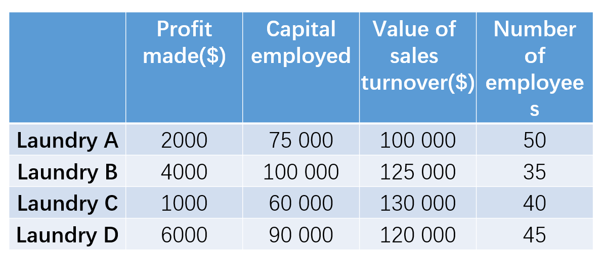
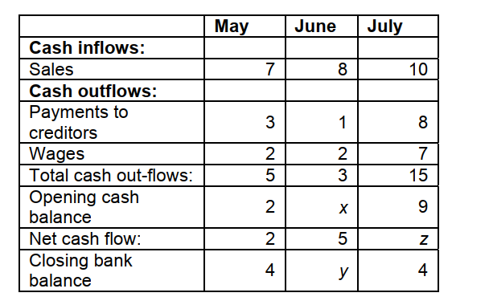
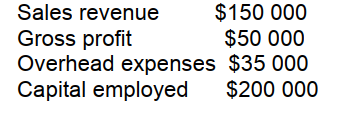

1. _____ are businesses owned by shareholders but they can sell shares to the public and their shares are tradeable on the Stock Exchange.
2. _____ is a person who organises, operates and takes the risk for a new business venture.
3. One of the key characteristics of a successful entrepreneur is:
4. All of the following are likely reasons why people work except:
5. Which type of leadership style best defines “let it be”?
6. Using capital employed as a measure, which appears to be the largest firm?
7. Using the number of employees as a measure, which appears to be the largest firm?
8. Using the value of sales turnover as a measure, which appears to be the largest firm?
9. Which one of the following is a niche market business?
10. The formula of market share is _____
11. The 4 Ps of the marketing mix are:
12. In which type of production are several identical products completed at each stage before passing on to the next stage?
13. Which one of the following products is most likely to be produced using batch production methods?
14. A product sells for $7. Material and other variable costs are $3 per unit. Fixed costs are $60,000. The break-even level of output is:
15. When a raw material loses weight and bulk during processing, location of the processing business is likely to be:
16. Which of the following sources of finance is most likely to be used by a company planning to take over another business?
17. Which of the following is the value of X? ($000)
18. Which of the following is the value of Y? ($000)
19. Which of the following is the value of Z? ($000)
20. The gross profit margin was _____
21. _____ leadership style is where the manager expects to be in charge of the business and to have their orders followed.
22. _____ are graphs which show how costs and revenues of a business change with sales.
23. _____ outlines the responsibilities and duties to be carried out by someone employed to do a specific job.
24. _____ is an identifiable sub-group of a whole market in which consumers have similar characteristics or preferences.
25. _____ is a financial plan for the marketing of a product or product range for some specified period of time.
26. The ‘location decision’ for a business means:
27. Which of the following is an example of internal finance for a limited company?
28. Which of the following sources of finance is most likely to be used by a company planning to take over another business?
29. A large national toy retailer wants to inform potential consumers of its huge product range. It would be most likely to use:
30. All of the following are examples of forms of media technology that can be used to communicate with customers except:
31. According to F.W Taylor's rule, employees can be motivated by _____
32. Job rotation is a Financial reward (True or False)
33. _____ are items owned by the business for less than 1 year, e.g., raw materials, cash.
34. The formula to calculate working capital is: _____
35. _____ is a term which is used to describe all the activities which go into marketing a product or service. (Hint: Four Ps – product, price, place, and promotion)
36. _____ refers to a diagram that outlines the internal management structure.
37. Which one of the following businesses is most likely to be badly affected by a long recession?
38. XYZ Co. has found out that one of its suppliers employs children to do dangerous production work. The managers of XYZ do nothing about this. This is an example of:
39. _____ is the continuous improvement of products and processes by focusing on quality at every stage of production.
40. _____ is a way of keeping a product at the maturity stage of the life cycle and extending the cycle.